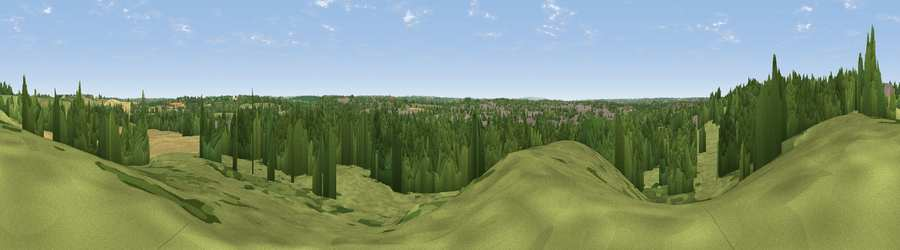

Viewpoint near Royal Leamington Spa
#39956 in England · top 89% of its area beats it · near Royal Leamington SpaThe view, rendered

A 360° render of this exact spot computed from the terrain model, tree cover and land cover — summer colours, afternoon light, calibrated against photographs of famous viewpoints. Real trees, hedges and buildings will differ in detail.
The panorama
Grey silhouette: terrain skyline in each direction (720 bearings, Earth curvature and refraction included). Dashed green: skyline with trees (+15 m) and buildings (+8 m) as obstacles. Blue strip: how far the ground is visible on each bearing.
Where the view opens
Wedge length = distance to the farthest visible ground on that bearing (vegetation-aware). Rings at 10, 25 and 50 km.
What fills the view
46% grassland · 32% woodland · 13% cropland · 8% built-up ·
Angular shares of the visible panorama (visual magnitude), not map area. Landscape diversity 0.54 (0–1 Shannon).
Key numbers
More beautiful places nearby
The staircase of upgrades: each row has a higher view potential than everything closer. Driving times are estimates from straight-line distance, calibrated against real road routing — check an actual route before setting out.
| Place | Direction | Drive | Score |
|---|---|---|---|
| Crown Hill | SSE · 4 km | ~8 min | 43.8 |
| Viewpoint near Wasperton | SW · 11 km | ~20 min | 46.8 |
| Viewpoint near Northend | SSE · 15 km | ~27 min | 65.3 |
| Viewpoint near Northend | SSE · 15 km | ~27 min | 66.0 |
| Viewpoint near Northend | SSE · 16 km | ~28 min | 69.7 |
| Viewpoint near Northend | SSE · 16 km | ~28 min | 70.3 |
| Viewpoint near Radway | SSE · 18 km | ~31 min | 71.7 |
| Viewpoint near Meon Vale | SW · 26 km | ~42 min | 77.0 |
52.29089, -1.50990 · source: screening · position refined by local search. Computed location — check access rights before visiting.